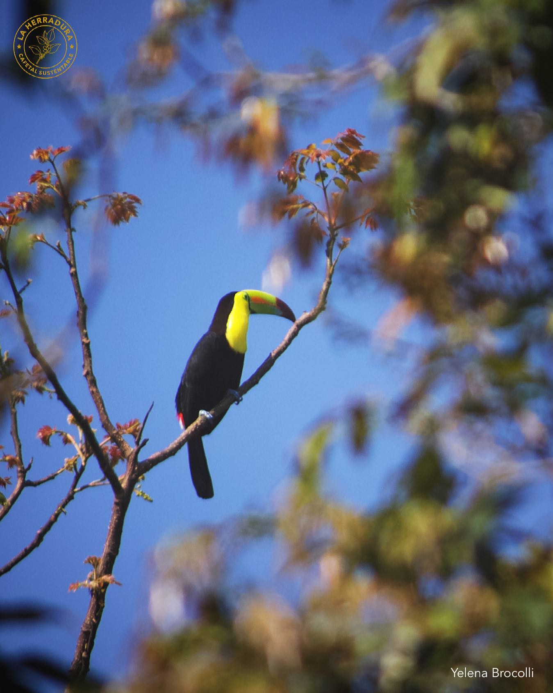
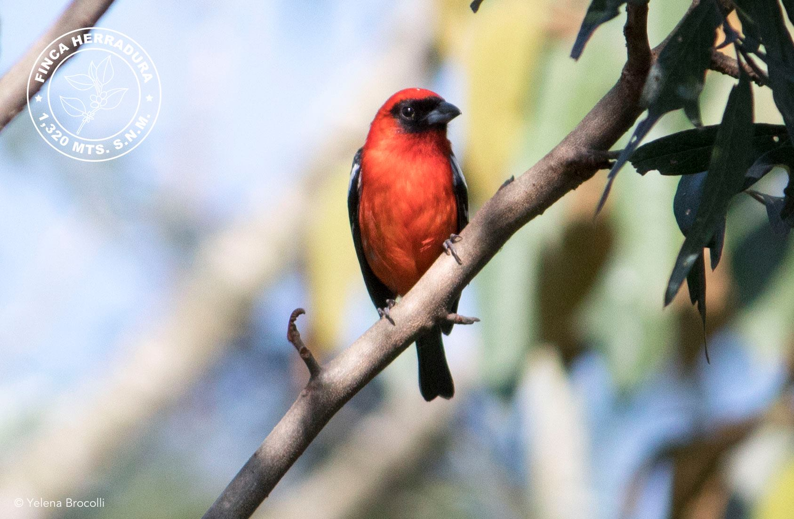
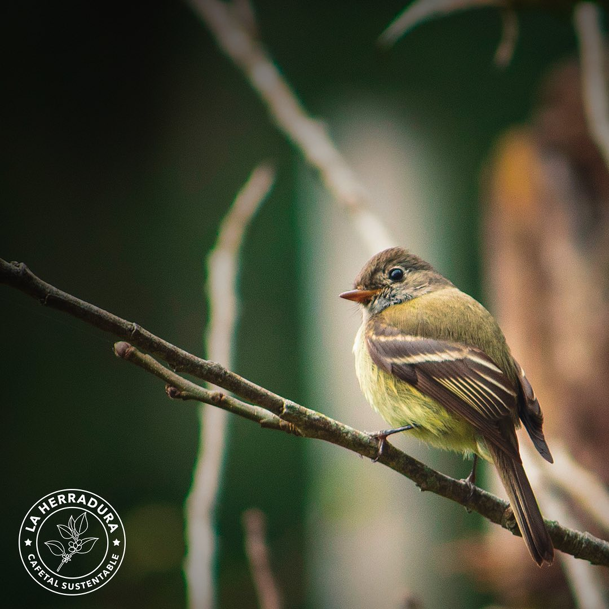
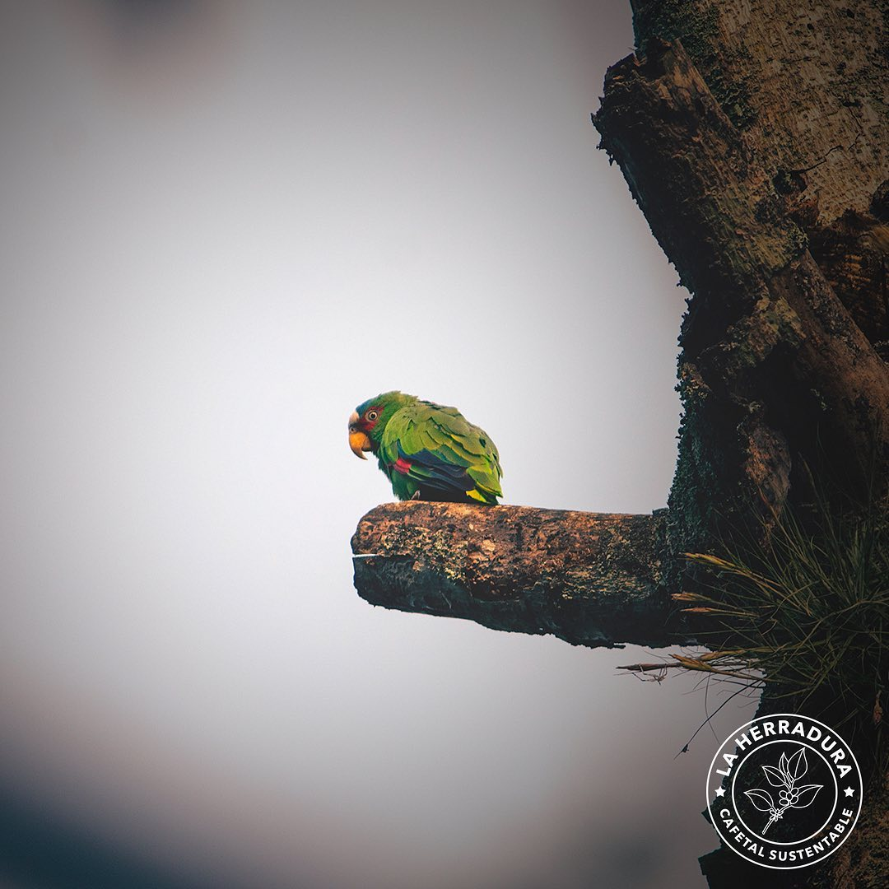
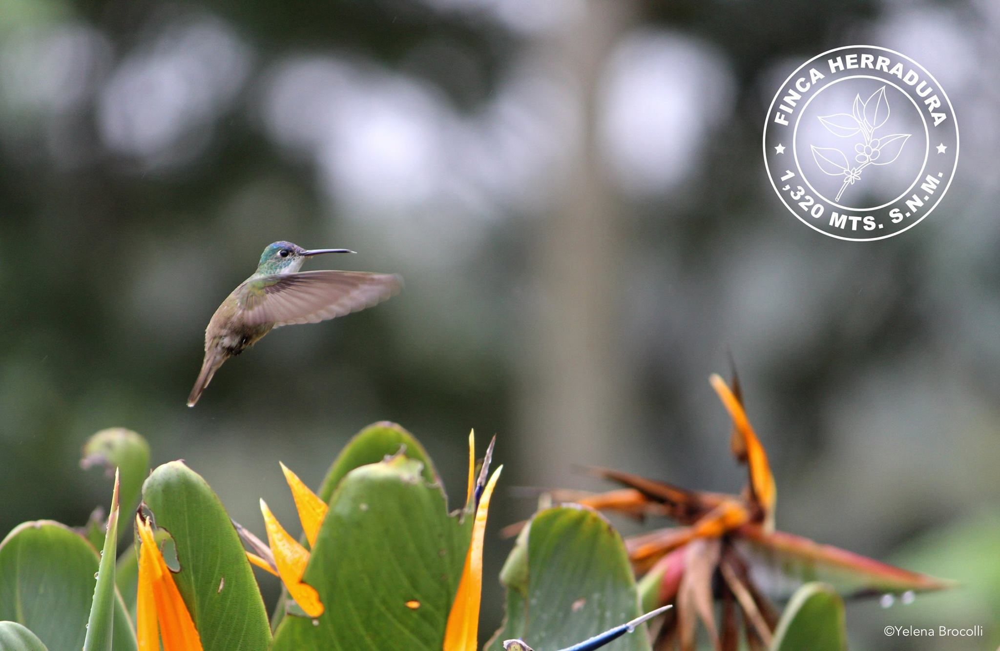
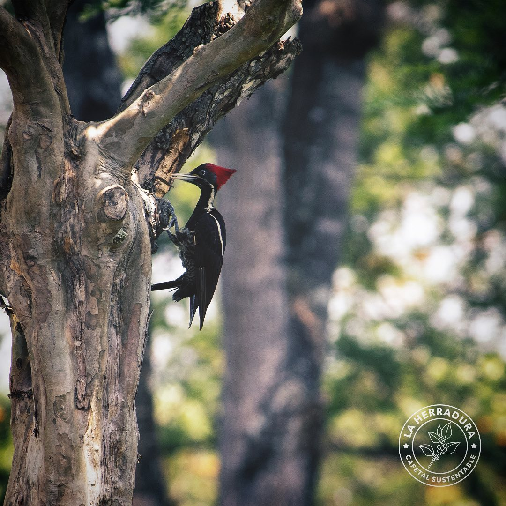

Yelena Astrid Ruiz Pucheta
Creadora de contenido digital y fotógrafa.
Iniciando mi camino en la informática descubrí algo impresionante en la Fotografía y el Video que me hizo cambiar de paradigma, administrando comunidades online, elaboro diseños, imágenes y videos que se utilizan para promoción y/o divulgación científica.
Mi Software favorito
 Final Cut Pro
Final Cut Pro
 Photoshop
Photoshop
Galería






Últimos proyectos
Canal Finca Herradura
Apasionados por el café Cafetal Sustentable la Herradura creo este canal de YouTube para compartir y divulgar conocimiento del café de especialidad que se produce en México
Último Video